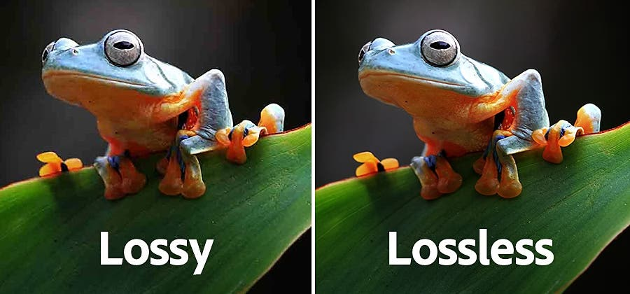

Afbeeldingen en geluidsbestanden met veel details nemen veel opslagruimte in. Daardoor zit de harde schijf van je computer ook sneller vol en daardoor duurt het langer om deze bestanden te downloaden. Hiervoor is een oplossing en dat je bestandcompressie. Met bestandcompressie worden afbeelding en geluidsbestanden kleiner gemaakt. Er zijn twee soorten bestandcompressies lossy compression en lossless compression.
Bij lossy compression wordt informatie uit het orginele bestand verwijderd of aangepast. Om zo het bestand kleiner te maken. Een voorbeeld hiervan is bijvoorbeeld een foto van een kat waarbij de katbestaat uit honderde verschillende bruintinten die het mensenlijk oog niet kunnen zien. Als de computer dan minder bruintinten verwerkt in de foto wordt het bestand kleiner, maar de foto ziet er nog steeds hetzelfde uit. Wat wel is hoe meer lossy compression wordt toegepast hoe meer de kwaliteit van de foto achteruit gaat. Een lossy compression-methode is JPEG, afgekort JPG. Foto's die je met je telefoon maakt worden als JPG bestand opgeslagen en je telefoon past dan automatisch lossy compression toe.
Bij losseless compression wordt er geen informatie verwijderd. De informatie wordt alleen op een handigere manier opgeslagen. Als er in een foto 4 pixels met dezelfde waarden naast elkaar staan bijvoorbeeld waarden 78, wordt dit standaard opgeslagen als (78,78,78,78). Maar door lossless compression toe te passen wordt het opgeslagen als (4,78). Het bestand wordt zo kleiner gemaakt, maar je kunt wel altijd nog terug naar het orgineel, wat bij lossy compression niet kan.
Op geluidsfragmenten kan ook compressie worden toegepast. De vaakst gebruikte techniek is ook een lossy compression-methode. Dat is namelijk MP3. Net zo als bij afbeelding wordt er dan ook informatie verwijderd, maar bij geluidsfragmenten wordt er informatie verwijderd die het menselijk oor niet kan horen. Het menselijk gehoor kan namelijk geluiden boven 20 kHz niet horen. Met MP3 worden dan geluiden boven de 16 kHz weggelaten.
Een bitmapafbeelding is een afbeelding die is opgebouwd uit pixels. Hoe meer pixels een afbeelding heeft hoe scherp de afbeelding is. Een bitmapafbeelding heeft 2 eigenschappen, maar dit zijn ook de nadelen van de bitmap afbeelding. 1 -> een bitmapafbeelding kost heel veel opslag ruimte 2 -> als je gaat inzomen op een bitmapafbeelding wordt die minder scherp, omdat de pixels dan zichtbaar worden. Het is dus ook hoe groter de aafbeelding, hoe meer pixels die bevat, hoe meer opslag die inneemt. Bij een vectorafbeelding gebeurt dit anders. Er wordt dan niet het aantal pixels opgeslagen, maar de vorm van de afbeelding. Er wordt dan alleen opgeslagen: de vorm, de locatie, de grootte en de kleur. Voordeel vectorafbeelding: als je inzoomt op een vectorafbeelding wordt die niet minder scherp, omdat alleen de grootte aangepast moet worden. Nadeel vectorafbeelding: je kan alleen vormen als vectorafbeelding opslaan. Dus geen foto's die uit heel veel verschillende kleuren bestaan.